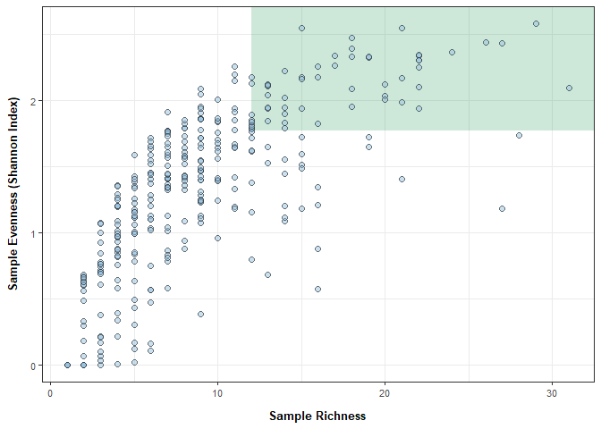

Phyloseq Diversity Metrics: eDNA metabarcoding base script
This script analyzes your relative abundance matrix to assess alpha and beta diversity. Figures produced are potentially part of the main figures of your manuscript/report.
Load libraries
library(ggplot2) ## for plotting
library(tidyverse) ## for data manipulation
## ── Attaching core tidyverse packages ──────────────────────── tidyverse 2.0.0 ──
## ✔ dplyr 1.1.4 ✔ readr 2.1.5
## ✔ forcats 1.0.0 ✔ stringr 1.5.1
## ✔ lubridate 1.9.3 ✔ tibble 3.2.1
## ✔ purrr 1.0.2 ✔ tidyr 1.3.1
## ── Conflicts ────────────────────────────────────────── tidyverse_conflicts() ──
## ✖ dplyr::filter() masks stats::filter()
## ✖ dplyr::lag() masks stats::lag()
## ℹ Use the conflicted package (<http://conflicted.r-lib.org/>) to force all conflicts to become errors
library(phyloseq)
library(knitr)
library(readxl)
library(writexl)
library(cowplot)
##
## Attaching package: 'cowplot'
##
## The following object is masked from 'package:lubridate':
##
## stamp
## for stats
library(pairwiseAdonis)
## Loading required package: vegan
## Loading required package: permute
## Loading required package: lattice
## This is vegan 2.6-8
## Loading required package: cluster
library(lme4) ## for stats
## Loading required package: Matrix
##
## Attaching package: 'Matrix'
##
## The following objects are masked from 'package:tidyr':
##
## expand, pack, unpack
library(car) ## for stats
## Loading required package: carData
##
## Attaching package: 'car'
##
## The following object is masked from 'package:dplyr':
##
## recode
##
## The following object is masked from 'package:purrr':
##
## some
library(stats) ## for stats
library(vegan)
library("microbiome") ## for alpha diversity functions
##
## microbiome R package (microbiome.github.com)
##
##
##
## Copyright (C) 2011-2022 Leo Lahti,
## Sudarshan Shetty et al. <microbiome.github.io>
##
##
## Attaching package: 'microbiome'
##
## The following object is masked from 'package:vegan':
##
## diversity
##
## The following object is masked from 'package:ggplot2':
##
## alpha
##
## The following object is masked from 'package:base':
##
## transform
## set seed
set.seed(1234)
Load data
Before continuing with analyses, decide on what data you’re going to use an input. Relative abundance, raw reads, rarefied counts (can be done in phyloseq), variance stabilizing transformation (vst) from DESeq2? The input will impact your interpretation and thus is important to decide before conducting any stats to avoid bias towards a particular result.
On the Fisheries team, we have traditionally used relative abundance and the following code uses that dataset.
Relative Abundance data
# Option 1: Change global options (affects all subsequent operations)
## Convert scientific notation to regular numbers
options(scipen = 999)
## Relative abundance matrix
df <- read_xlsx("example_output/Results_2_relative_abundance_matrix.xlsx") %>%
## removing common_name and category for now
dplyr::select(-Common_name, -Category) %>%
## Remove columns with NA values
dplyr::select(where(~!any(is.na(.)))) %>%
## making species_name rownames instead of column
column_to_rownames(var = "Species_name") %>%
# remove columns that sum to 0
select(where(~sum(., na.rm = TRUE) != 0))
Metadata
meta <- read_xlsx("example_input/metadata.xlsx") %>%
## rownames are also needed in phyloseq meta table
mutate(sampleID2=sampleID) %>% column_to_rownames(var = "sampleID2")
Create phyloseq object
## Create ASV (OTU) table and meta table
otu <- otu_table(df, taxa_are_rows = T)
meta_phyloseq <- sample_data(meta)
## Merge metadata and OTU table into one phyloseq "object"
phylo_obj <- merge_phyloseq(otu, meta_phyloseq)
## view phyloseq obj
## expected output = otu_table() with taxa and sample numbers and sample_data() with the sample and column numbers
print(phylo_obj)
## phyloseq-class experiment-level object
## otu_table() OTU Table: [ 107 taxa and 328 samples ]
## sample_data() Sample Data: [ 328 samples by 10 sample variables ]
# Ensure that your OTU table doesn't contain any NA or negative values (output should be FALSE)
any(is.na(otu_table(phylo_obj)))
## [1] FALSE
any(otu_table(phylo_obj) < 0)
## [1] FALSE
Subsetting phyloseq object
Optional if you’d like to break your data up by a certain variable (surface water, bottom water). If desired, uncomment the code chunk below.
# surface <- subset_samples(phylo_obj, SampleType == "Surface Water")
# bottom <- subset_samples(phylo_obj, SampleType == "Bottom Water")
Alpha Diversity
Comparing the species diversity (shannon index or species richness) at each site.
Calculating Shannon Index and Species Richness
The alpha function in the microbiome package calculates several alpha diversity indices. The most relevant are likely observed (species richness) and diversity_shannon (shannon index).
https://microbiome.github.io/tutorials/Alphadiversity.html
Or use plot_richness function from:
https://rstudio-pubs-static.s3.amazonaws.com/1071936_6115f873acbc4dc4a30b1380cc3885fb.html
fill_col = c("cyan4", "deeppink4", "#ed6a5a")
## Calculate
alpha_div <- estimate_richness(phylo_obj, measures = c("Shannon", "Simpson")) %>%
rownames_to_column(var = "sampleID") %>% left_join(., meta, by = "sampleID")
alpha_div %>%
gather("measurement", "value", Shannon:Simpson) %>%
ggplot(., aes(x=SampleType, y=value)) +
geom_boxplot(aes(color = SampleType), fill=NA, outlier.shape=NA, show.legend = FALSE) +
geom_jitter(width=0.2, shape=21, aes(fill = SampleType), color = 'black', alpha=0.5) +
facet_wrap(~measurement, scales = "free_y", strip.position = "left") +
## labels
labs(x="Sample Type", y="", fill = "Sample Type") +
scale_fill_manual(values = fill_col) +
scale_color_manual(values = fill_col) +
## theme options
theme_bw() +
theme(panel.background=element_blank(),
strip.background=element_blank(),
strip.text = element_text(size = 10, face="bold"),
legend.position = "none",
strip.clip = 'off',
strip.placement = "outside",
axis.text.y = element_text(size=8, color="grey30"),
axis.text.x = element_text(size=8, color="grey30"),
axis.title.y = element_text(margin = margin(t = 0, r = 10, b = 0, l = 0), size=10, face="bold"),
axis.title.x = element_text(margin = margin(t = 10, r = 0, b = 0, l = 0), size=10, face="bold"))
ggsave("example_output/Figures/alpha_diversity.png", width = 6, height = 4)
Richness vs. Shannon per sample used in contract report
## Species Richness
biodiv_df <- df %>%
rownames_to_column(var = "Species_name") %>%
gather("sampleID", "relab", 2:last_col()) %>%
group_by(sampleID) %>%
summarize(richness = sum(relab > 0)) %>%
## Species Evenness ~ Shannon
left_join(., alpha_div %>% dplyr::select(sampleID, Shannon), by = "sampleID")
## Exporting data
biodiv_df %>% dplyr::rename(Richness = richness) %>% left_join(., meta, by = "sampleID") %>%
write_xlsx("example_output/Biodiversity.xlsx")
## plotting
biodiv_df %>%
ggplot(., aes(x=richness, y=Shannon)) +
geom_rect(aes(xmin = quantile(biodiv_df$richness, 0.75), xmax = Inf,
ymin = quantile(biodiv_df$Shannon, 0.75, na.rm = TRUE), ymax = Inf),
fill = "#F2F7F2", alpha = 0.15) +
geom_point(fill = "#97C1DE", color='black', shape=21, alpha=0.5, size=2) +
labs(
x = "Species Richness",
y = "Species Evenness (Shannon Index)"
) +
theme_bw() +
theme(
axis.text.y = element_text(size=8, color="grey30"),
axis.text.x = element_text(size=8, color="grey30"),
axis.title.y = element_text(margin = margin(t = 0, r = 10, b = 0, l = 0), size=10, face="bold"),
axis.title.x = element_text(margin = margin(t = 10, r = 0, b = 0, l = 0), size=10, face="bold")
)
## Warning: Use of `biodiv_df$richness` is discouraged.
## ℹ Use `richness` instead.
## Warning: Use of `biodiv_df$Shannon` is discouraged.
## ℹ Use `Shannon` instead.
## Warning: Removed 5 rows containing missing values or values outside the scale range
## (`geom_point()`).

ggsave("example_output/Figures/biodiversity.png", width = 5.5, height = 5)
## Warning: Use of `biodiv_df$richness` is discouraged.
## ℹ Use `richness` instead.
## Warning: Use of `biodiv_df$Shannon` is discouraged.
## ℹ Use `Shannon` instead.
## Warning: Removed 5 rows containing missing values or values outside the scale range
## (`geom_point()`).
Statistics
Test: T-test or ANOVA - Type I, II, and III:
- * indicates an interaction (SampleType*Month). Usually we are
interested in the interaction of our factors.
- + indicates an additive effect (SampleType + Month)
T-test to be used when only two groups to compare and ANOVA to be used with 3+ groups. Al
non-parametric Kolmogorov-Smirnov test for two-group comparisons when there are no relevant covariates
## Create model
aov <- aov(Shannon ~ SampleType, data = alpha_div)
## ANOVA test on above model
Anova(aov, type = "III")
## Anova Table (Type III tests)
##
## Response: Shannon
## Sum Sq Df F value Pr(>F)
## (Intercept) 10.880 1 28.9137 0.0000001449 ***
## SampleType 2.302 2 3.0595 0.04827 *
## Residuals 122.294 325
## ---
## Signif. codes: 0 '***' 0.001 '**' 0.01 '*' 0.05 '.' 0.1 ' ' 1
Test: If 3+ groups, Tukey Post Hoc Comparisons
TukeyHSD(aov)
## Tukey multiple comparisons of means
## 95% family-wise confidence level
##
## Fit: aov(formula = Shannon ~ SampleType, data = alpha_div)
##
## $SampleType
## diff lwr upr p adj
## Control-Blank 0.46237370 0.01372728 0.91102012 0.0416634
## Inside WEA-Blank 0.36259559 -0.06463695 0.78982812 0.1142372
## Inside WEA-Control -0.09977811 -0.28988218 0.09032596 0.4329459
Beta Diversity
Comparing the community assemblages between sites/groups.
Resources (Read before continuing):
- https://ourcodingclub.github.io/tutorials/ordination/ -
https://uw.pressbooks.pub/appliedmultivariatestatistics/chapter/comparison-of-ordination-techniques/
Common options:
- Principal Components Analysis (PCA): Euclidean distance measure
- Principal Coordinates Analysis (PCoA): Dissimilarity distance based
- Non-metric MultiDimensional Scaling (NMDS): Dissimilarity distance
based
PCoA and NMDS handle zero’s in community matrices much better than PCA. For metabarcoding data, usually PCoA and NMDS are more appropriate. The differences between PCoA and NMDS are minor compared to difference between PCA. NMDS is iterative and used a different ordering method (see resource links above for more info).
NMDS requires evaluation of the output ‘stress value’: This value tells you how well the model fit your data. This is helpful to include on your NMDS plot in reports/manuscripts/presentations.
Stress (0-1 scale) Interpretation < 0.05 = Excellent representation
with no prospect of misinterpretation < 0.10 = Good ordination with no
real disk of drawing false inferences < 0.20 = Can be useful but has
potential to mislead. In particular, shouldn’t place too much reliance
on the details > 0.20 = Could be dangerous to interpret > 0.35 =
Samples placed essentially at random; little relation to original ranked
distances
If your stress value is >0.2, do not include in analyses and try PCoA instead.
Calculating dissimilarity matrix
## Bray Curtis Dissimilarity Matrix (used in statistics)
bray_df <- phyloseq::distance(phylo_obj, method = "bray")
## Sample information
sample_df <- data.frame(sample_data(phylo_obj))
Plotting
PCoA
https://www.rdocumentation.org/packages/phyloseq/versions/1.16.2/topics/ordinate
## Conduct PCoA
pcoa <- ordinate(physeq = phylo_obj, method = "PCoA", distance = "bray")
## Plotting
plot_ordination(phylo_obj, pcoa,
## USER EDITS shape, color, alpha, fill, etc. as desired based on project metadata
color = "Depth") +
## Point and point aesthetics
geom_point(aes(color = Depth), alpha = .5, size = 5) +
scale_color_manual(values = c("green4", "gold3")) +
## Labels: USER EDITS as desired
labs(color = "Sample Type") +
ggtitle("PCoA example") +
## Theme: USER EDITS as desired
theme_bw() +
theme(
legend.title = element_text(face = "bold", size=12),
legend.position = "right",
axis.title.y = element_text(margin = margin(t = 0, r = 10, b = 0, l = 0), size=10, face="bold"),
axis.title.x = element_text(margin = margin(t = 10, r = 0, b = 0, l = 0), size=10, face="bold"),
)
## USER EDITS WIDTH AND HEIGHT TO DESIRED
ggsave("example_output/Figures/PCoA_phyloseq.png", width = 8, height = 6)
NMDS
## Calculating NMDS
## filtering for the sake of example visual
phylo_obj_filtered <- prune_samples(sample_data(phylo_obj)$SampleType != "Blank", phylo_obj)
NMDS <- ordinate(physeq = phylo_obj_filtered, method = "NMDS", distance = "bray")
## Run 0 stress 0.2324997
## Run 1 stress 0.2399498
## Run 2 stress 0.2363517
## Run 3 stress 0.2410485
## Run 4 stress 0.2466303
## Run 5 stress 0.2422236
## Run 6 stress 0.2435588
## Run 7 stress 0.2445893
## Run 8 stress 0.2359513
## Run 9 stress 0.2366502
## Run 10 stress 0.2433675
## Run 11 stress 0.2533385
## Run 12 stress 0.2439828
## Run 13 stress 0.2438916
## Run 14 stress 0.2402618
## Run 15 stress 0.246462
## Run 16 stress 0.2315938
## ... New best solution
## ... Procrustes: rmse 0.02792967 max resid 0.1792405
## Run 17 stress 0.2359704
## Run 18 stress 0.2448772
## Run 19 stress 0.2472408
## Run 20 stress 0.2375073
## *** Best solution was not repeated -- monoMDS stopping criteria:
## 1: no. of iterations >= maxit
## 19: stress ratio > sratmax
## Plotting
plot_ordination(phylo_obj_filtered, NMDS,
## USER EDITS shape, color, alpha, fill, etc. as desired based on project metadata
color = "SampleType") +
## Point and point aesthetics
geom_point(aes(color = SampleType), alpha = .5, size = 5) +
scale_color_manual(values = fill_col) +
## Labels: USER EDITS as desired
labs(color = "Sample Type") +
ggtitle("NMDS example") +
## adding stress value to plot (user edits x and y to desired location)
annotate(geom = "label", x = 1.2, y = 1.8,
label = sprintf("Stress: %.6f", NMDS$stress), hjust = 0, vjust = 1,
label.size = NA, fontface = "italic", color = "grey30", size = 2.75, fill="white") +
## Theme: USER EDITS as desired
theme_bw() +
theme(
legend.title = element_text(face = "bold", size=12),
legend.position = "right",
axis.title.y = element_text(margin = margin(t = 0, r = 10, b = 0, l = 0), size=10, face="bold"),
axis.title.x = element_text(margin = margin(t = 10, r = 0, b = 0, l = 0), size=10, face="bold"),
)

## USER EDITS WIDTH AND HEIGHT TO DESIRED
ggsave("example_output/Figures/NMDS_phyloseq.png", width = 8, height = 6)
Statistics
Test: PERMANOVA - * indicates an interaction (SampleType*Month).
Usually we are interested in the interaction of our factors.
- + indicates an additive effect (SampleType + Month)
The output will tell you which factors significantly impact the community assemblage (matrix).
adonis2(bray_df ~ SampleType, data = sample_df, permutations = 99)
## Permutation test for adonis under reduced model
## Permutation: free
## Number of permutations: 99
##
## adonis2(formula = bray_df ~ SampleType, data = sample_df, permutations = 99)
## Df SumOfSqs R2 F Pr(>F)
## Model 2 1.973 0.01778 2.941 0.01 **
## Residual 325 109.017 0.98222
## Total 327 110.990 1.00000
## ---
## Signif. codes: 0 '***' 0.001 '**' 0.01 '*' 0.05 '.' 0.1 ' ' 1
Additional test: Pairwise PERMANOVA
The output will tell you which specific variable within each factor is driving the significant effects.
pairwise.adonis2(bray_df ~ SampleType, data = sample_df)
## $parent_call
## [1] "bray_df ~ SampleType , strata = Null , permutations 999"
##
## $`Inside WEA_vs_Blank`
## Df SumOfSqs R2 F Pr(>F)
## Model 1 1.408 0.01639 4.1647 0.001 ***
## Residual 250 84.541 0.98361
## Total 251 85.949 1.00000
## ---
## Signif. codes: 0 '***' 0.001 '**' 0.01 '*' 0.05 '.' 0.1 ' ' 1
##
## $`Inside WEA_vs_Control`
## Df SumOfSqs R2 F Pr(>F)
## Model 1 0.606 0.00568 1.7942 0.069 .
## Residual 314 106.037 0.99432
## Total 315 106.643 1.00000
## ---
## Signif. codes: 0 '***' 0.001 '**' 0.01 '*' 0.05 '.' 0.1 ' ' 1
##
## $Blank_vs_Control
## Df SumOfSqs R2 F Pr(>F)
## Model 1 1.1454 0.04005 3.5878 0.002 **
## Residual 86 27.4558 0.95995
## Total 87 28.6012 1.00000
## ---
## Signif. codes: 0 '***' 0.001 '**' 0.01 '*' 0.05 '.' 0.1 ' ' 1
##
## attr(,"class")
## [1] "pwadstrata" "list"